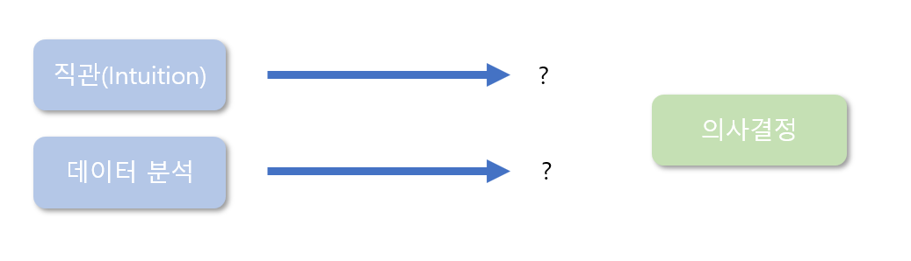
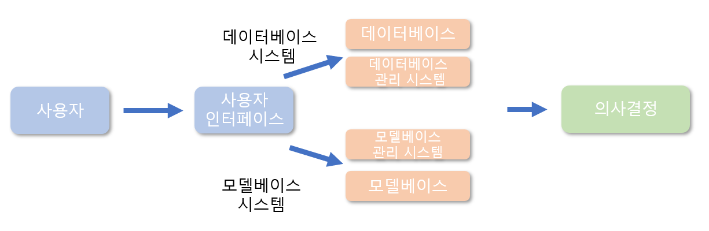
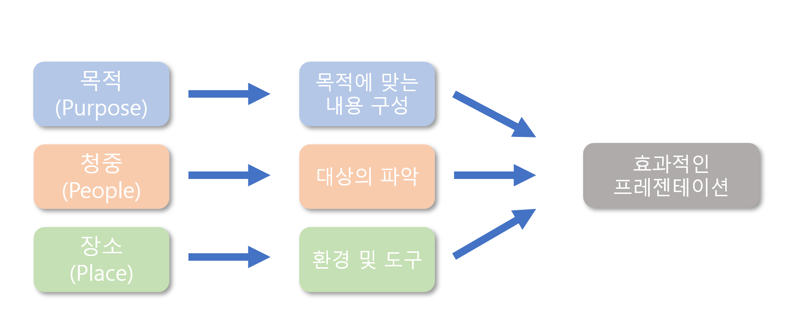

4 데이터 기반 의사결정
4.1 데이터 품질관리
4.1.1 데이터 품질관리의 의의
4.1.1.1 데이터 품질의 정의
데이터가 중시되는 현재 환경에서는 데이터도 매우 중요한 품질관리의 대상이 됨
- 과거 미국의 주요 기업들 중 고객중심 경영환경의 구축을 위해 고객관계관리(Customer Relationship Management)를 추진하였으나 제대로 성과를 거두지 못하고 실패한 경우가 있음
- 요인을 분석한 결과, 가장 중요한 요인 중 하나가 고객정보 데이터의 낮은 품질로 나타남
- 최근에는 데이터 품질관리의 중요성을 인식하고 체계적으로 수행함으로써 비용과 성과 면에서 긍정적인 효과를 거두고 있음
- 과거 미국의 주요 기업들 중 고객중심 경영환경의 구축을 위해 고객관계관리(Customer Relationship Management)를 추진하였으나 제대로 성과를 거두지 못하고 실패한 경우가 있음
데이터 품질이란 “데이터를 사용하기에 적절한 환경, 즉 적합성, 적시성, 정확성, 완전성, 적절성, 접근 가능성 등을 이르는 말”임
- 실무적으로 보면, 지식 및 정보와 관련된 업무에 종사하는 사람들이 데이터를 활용하여 업무를 효과적으로 수행하기 위한 데이터의 기대 수준이라고 해석할 수 있음
좋은 품질의 데이터란 데이터의 적시성이 담보되는 가운데 업계 표준을 준수하는 완전하고 일관성 있는 정확한 데이터를 의미함
데이터의 품질을 개선하여 거래 당사자는 생산성을 향상시키는 동시에 거래 속도도 높음으로써 비용을 감소시킴
좋은 품질의 데이터는 거래를 확대시키고 좋은 협업자를 발굴할 수 있는 기회를 제공하며 글로벌 데이터 공유의 토대가 됨
데이터 환경이 급속하게 변화함에 따라 데이터 관리는 공공기관의 영역에서도 중요한 문제로 제기됨
- 한국보건산업진흥원: 연구전문기관이 공동사용하는 표준과제관리 시스템 운영을 통해 연구지원 서비스의 품질 향상 및 일관된 데이터 품질 확보
4.1.1.2 데이터 품질관리의 필요성
데이터 품질관리란 업무목적을 효과적으로 달성할 수 있도록 데이터의 품질을 지속적으로 관리하는 프로세스를 의미함
좋은 데이터 품질은 상품, 용역이나 서비스의 공급 측면에서 볼 때 이러한 공급체계의 효율성을 높이는 최고의 중요 요소임
지속적으로 좋은 품질의 데이터를 유지하면 오류나 오차를 줄일 수 있을 뿐만 아니라, 효율성 자체를 증진시킬 수 있음
효율성 증진은 상당한 비용 절감을 가져올 수 있으며, 이는 고객의 만족으로 이어지며 기업 성과에 매우 긍정적인 영향을 미침
좋은 품질의 데이터는 많은 문제를 해결할 수 있는 해결책을 제시함
만약 데이터의 품질이 제대로 관리되지 않으면 매우 많은 부분에서 경영활동의 제약을 초래함
- 알러지 유발 제품의 함유도
- 잘못된 거래물품 번호로 인한 가격 오류나 판매시점 지연 등
4.1.2 데이터 품질관리 시스템
4.1.2.1 데이터 품질관리 시스템의 의의
데이터 품질관리 시스템(data quality management system)은 데이터의 품질관리를 효과적으로 할 수 있도록 도움
데이터 품질관리 시스템은 신뢰할 수 있는 좋은 데이터가 생성되고 공급 체인 내의 원활한 흐름을 통해 원활히 전달, 유지될 수 있도록 하는 내부 프로세스
- 데이터 품질 프레임워크는 데이터 품질의 개선을 위한 가이드를 제공함
- 이를 바탕으로 중요한 프로세스 및 조직들이 데이터 품질을 개선하고 지속적으로 양질의 데이터 출력을 유지할 수 있는 환경이 조성됨
데이터 품질관리 시스템은 기존의 시스템 기반 위에 구축할 수 있으므로 초기 비용이 상당히 적게 든다는 장점이 있음
4.1.2.2 데이터 품질관리의 12단계
데이터 품질관리가 효과적으로 실행되기 위해서 주의를 기울여야 할 요소
현존하는 데이터 관리절차가 얼마나 발전된 것인지 판단해야 함
기업의 규모에 따른 적정한 데이터 품질관리 체계가 구축되어야 함
- 기업의 규모에 비해 지나치게 빈약하거나 과잉인 시스템은 오히려 데이터 품질관리가 효율적으로 이루어지는 데 걸림돌로 작용함
데이터 품질관리 절차의 복잡성(complexity)
GS1(전문 경영 컨설팅 업체, 2010)은 성공적인 데이터 품질관리를 위해 필요한 필수적인 단계를 12단계로 나누어 설명함
- 최고 경영자의 의지표명
- 책임 관리자 임명
- 데이터 품질 인식 프로그램 시작
- 숙련자 양성 교육
- 데이터 품질관리 프로세스
- 데이터 품질관리 시스템 관련 문서 개발 - 규정이나 운영 매뉴얼
- 6단계의 문서 리뷰와 조정(control)
- 관리체계 실행 및 운영
- 내부 데이터 품질 감사(audit)
- 관리절차 리뷰(review)
- 적합성 평가
- 지속적인 개선
4.1.2.3 낮은 품질의 데이터
- 흔히 발생하기 쉬운 좋지 않은 데이터의 유형
| 낮은 품질의 데이터 예 | 해결을 위한 노력 |
|---|---|
| 결측치나 속성이 알려지지 않은 데이터 | 결측치의 보완 문제 등에 주의 |
| 부정확하고 유효하지 않으며 일관성이 없는 데이터 | 잘못된 기록이나 정보로 활용되지 않도록 유의 |
| 왜곡되고 잘못된 인코딩에 의한 데이터 | 데이터 왜곡의 이유를 파악하고 이에 대한 처리방법을 논의 |
| 잘못된 해석을 초래하는 데이터 | 데이터 설명을 충분히 숙지 |
| 오염된 데이터 | 데이터클리닝 과정 고려 |
| 중요성을 간과하고 있는 지나치게 많은 양의 데이터 | 중요성을 지니는 부분 선별 |
4.1.3 데이터 분석
4.1.3.1 데이터 분석 도입의 배경
최근의 환경변화에 발맞추어 다수의 기업이 데이터 분석의 중요성을 인식하기 시작하였으며 데이터 분석을 통한 최적 의사결정이라는 과제를 기업의 주요 전략 중 하나로 삼고 있음
데이터와 데이터 분석이 기업의 의사결정 과정에 큰 영향을 미침
의사결정에까지 이르는 과정에서 데이터가 충분히 확보되지 않아 분석에 문제가 발생하고 있음
데이터 분석을 어떻게 기획하느냐에 따라 발생 가능한 문제를 사전에 차단하고 기업업무 운영 전반의 최적화도 이룰 수 있음
4.1.3.2 데이터 분석 도입의 성공요소
- 한국데이터베이스 진흥원(2014)에서는 세 가지 측면을 데이터 분석 도입의 성공 요소로 들고 있음
분석 질문의 우선적 정의
- 무엇을 분석할 것인지 구체적이고 명확하게 정의할 필요가 있음
선택과 집중
데이터의 규모가 커지고 형태가 복잡해질수록 선택과 집중이 더욱 중요한 문제로 부각됨
선택과 집중을 기반으로 핵심 분석과정이 빠른 시간 내에 원활히 완료됨으로써 기업의 경쟁력 강화하는 긍정적인 효과를 얻을 수 있고 향후 유사 업무 프로세스에 적용할 수 있음
- 자동화된 분석의 업무 프로세스 내재화
데이터 분석이 의사결정에 필수적인 요소로서 적절하게 활용되기 위해서는 분석이 기업의 의사결정 프로세스의 일부로 자리 잡아야 함
분석을 업무 프로세스에 내재화하여 시간적인 단축을 유도할 뿐만 아니라 분석과 의사결정을 함께 연계하여 생각해 볼 수 있는 통찰력도 지닐 수 있게 됨
4.2 데이터 기반의 의사결정
4.2.1 데이터 과학자와 의사결정
데이터 과학자의 역할은 데이터의 구조를 이해하고 분석을 기획하는 것부터 데이터 분석의 범주에 이르기까지 광범위함
- 데이터 분석과정은 데이터의 구조나 저장 기능에 관한 이해와 비교해 볼 때, 실제적이고 구체적인 문제인식에서 시작됨
데이터 분석 담당자로서의 데이터 과학자는 고품질의 데이터 수집과 저장이 이루어진 상황에서 수준 높은 분석에 이르는 중요한 교각을 놓는 역할을 함
데이터 과학자는 연구의 초기 단계에서부터 개입하여 직접적으로 문제제기를 하게 됨
데이터가 양적으로 팽창하고 형태도 복잡, 다양하게 진화하는 상황에서 데이터의 성질과 구조를 올바르게 이해하고 적절한 문제제기와 더불어 연구 문제를 해결하기 위한 타당한 분석방법을 제시하기까지 전반적인 과정에서 데이터 과학이 차지하는 비중이 크게 높아짐
데이터를 보는 시각이 달라지면서 데이터 과학자의 위상이 상당히 높아짐
공공 및 사설 연구기관에서 연구를 수행하면서 데이터 분석 담당자를 연구진에 포함시키는 경향 확대
기업에서 주요 프로젝트를 수행활 때 데이터 분석 전문가를 초빙하여 공동연구를 진행
4.2.2 데이터 기반 의사결정
4.2.2.1 기업 경영자들의 입장
빅데이터 시대에 이르면서 데이터를 효과적으로 관리하고 분석할 수 있는 능력이 기업의 경쟁력으로 부각됨
데이터의 수집과 분석, 관리의 목적이 의사결정과 밀접한 관계가 있음
데이터를 얼마나 효과적으로 잘 이용하여 기업의 의사결정을 도울 수 있는가 하는 것이 기업의 경쟁력을 뒷받침한다고 할 수 있음
Applied Predictive Technologies (APT) - 조사 대상 분포
| 북아메리카 | 유럽 | 아시아-태평양 | 기타 |
|---|---|---|---|
| 27% | 35% | 26% | 12% |
- Economic Intelligence Unit (EIU)에서 작성한 Applied Predictive Technologies (APT)보고서(2014)의 조사결과, 대부분의 경영자들이 데이터에 기반을 둔 의사결정(data-driven decision making)을 하는 것으로 나타남

- 다만, 이러한 의사결정 과정에서 어떤 부분이 직관에 의한 것이며 어떤 부분이 과학적 분석에 의한 것인지 분별하기는 쉽지 않음
4.2.2.2 경영자들의 인식 조사결과
EIU의 APT 보고서의 조사결과 중 일부를 인용하여 데이터 이용에 관한 고위 경영자들의 인식에 대해 살펴봄
중요한 경영상의 결정을 하기 위해 사용하는 접근방법에 관한 질문
| 데이터 수집 | 협력방식 | 가설 수립 및 테스트 | 직관 |
|---|---|---|---|
| 42% | 32% | 17% | 10% |
- 의사결정 시 가용한 데이터가 개인적인 느낌(직관)과 배치될 경우
| 데이터 재분석 | 데이터 확충 | 데이터 분석 수용 | 데이터 무시 |
|---|---|---|---|
| 57% | 30% | 10% | 3% |
- 다음의 문장(statement)에 얼마나 동의하는가
” 더 많은 사람이 의사결정을 하는 과정에 참여하면 상황이 더 나아질 것이다.”
조사 대상자 중 38%가 강한 긍정 또는 긍정(strongly agree or agree)으로 응답하였으며, 또 다른 38%는 어느 정도 부정 또는 강한 부정(somewhat diagree and strongly disagree)으로 대답하였고, 24%는 긍정도 부정도 아닌 중립(neither agree nor disagree)을 택하여 전반적으로 균형을 이룸
조직의 의사결정에 관해 의사결정 참여자들이 얼마나 책임을 지는가
- 이 질문에 대해서는 절반 정도(51%)가 자신의 의사결정의 질에 관해 명확하게 평가받고 있다고 응답(중복 응답을 허락)
- 응답자 중 41% 정도만이 자신의 조직에서 잘못되거나 좋지 않은 의사결정을 한 사람들이 승진의 제약을 받고 있다고 응답
- 응답자 중 19%에 달하는 경영자가 자신의 조직에서는 의사결정을 담당한 사람이 결과에 전혀 책임을 지지 않는다고 응답
조직의 의사결정을 개선하기 위해 가장 도움이 되는 것은 무엇인가
- 가장 많은 응답을 기록(51%)한 것은 데이터 분석을 더욱 잘할 수 있는 능력이었음(better ability to analyse data)
- 뒤이어 의사결정의 책임성을 더욱 부여하는 것(more accountability for decision making)을 꼽았으며, 의사결정 훈련(decision-making training) 및 보다 협조적인 의사결정(more collaborative decision-making)이 뒤를 이음
- 이 밖에 더욱 투명한 의사결정(more transparent decision-making), 데이터 확충(more data), 의사결정 이전 실험과 테스트 확충(running more trials or tests before making-decisions) 등으로 응답
4.2.3 의사결정의 지원
4.2.3.1 의사결정 지원 시스템
의사결정 지원 시스템(Decision Support System, DSS)이란 데이터 기반의 의사결정을 데이터베이스와의 연관성을 고려하여 지원할 수 있는 방법
- 킨(Keen)과 모턴(Morton)이 제안한 것으로서 단순히 데이터를 수집, 저장, 분배하기 위한 시스템을 넘어서는 개념
- 사용자들이 기업의 의사결정을 쉽게 내릴 수 있도록 데이터를 분석해 주는 역할을 하는 컴퓨터 응용프로그램으로 구성되어 잇음
- 의사 결정 지원 시스템은 최고 경영층을 포함한 모든 경영층의 의사결정자의 업무 부담을 덜어 주고 분석모형과 데이터를 제공함으로써 의사결정 과정이 더욱 효과적으로 이루어지도록 돕는 역할
4.2.3.2 의사결정 지원 시스템의 구성요소
- 데이터베이스 시스템
다양한 데이터를 저장하고 있는 데이터베이스와 이를 관리하는 데이터베이스 관리 시스템(Data Base Management System, DBMS)으로 구성됨
데이터베이스에는 조직의 내부 데이터베이스, 외부 데이터베이스, 그리고 경영관리자의 개인 데이터베이스 등이 포함됨
- 모델베이스 시스템
- 의사결정에 필요한 다양한 모델을 저장하고 있는 모델베이스와 이들을 관리하는 모델베이스 관리 시스템(Model base Management System, MBMS)으로 구성됨
- 모델베이스 관리 시스템은 의사결정에 필요한 모델의 개발, 수정 및 통제의 기능을 제공하기 때문에 의사결정 지원과정에 매우 중요한 역할을 담당
- 사용자 인터페이스
- 데이터의 입력과 출력, 분석 과정에서 나타나는 사용자와 시스템 간의 인터페이스 환경을 제공하는 시스템 모듈을 의미함
- 사용자의 이해를 돕고 편의성을 높이기 위해서 메뉴방식이나 그래픽처리 형식을 이용함
- 대화생성 관리 시스템(Dialogue Generation and Management System, DGMS)이라고도 함
- 사용자
- 의사결정 지원 시스템 사용자는 주로 기업의 고위 경영자이며, 대안들을 평가, 분석하여 최적 대안을 선택하는 의사결정 과정을 수행함

4.2.3.3 의사결정 지원 시스템의 적용 사례
의사결정 지원 시스템은 의사결정자가 의사결정을 효과적으로 할 수 있도록 데이터에 기반한 정보를 제공하는 시스템으로서 공공기관 및 기업 등에 다양한 업무에 이용하고 있음
- 한국과학기술정보연구원의 R & D 의사결정 지원 시스템
- R & D 및 기술투자의 영향 정도를 평가하기 위한 시스템
- 영향의 정도를 계량적, 정성적 평가를 통해 R & D 투자의사결정 지원
- 기획 단계에서부터 의사결정 지원 시스템 이용 -> 투자기획안 선정
- 일본의 세븐일레븐의 성공 사례
- 일본 저녁에 흩어져 있는 5,000여 개 점포의 판매량과 고객정보를 실시간으로 파악
- 제품의 재고와 납품 내역을 실시간으로 파악
- 제품배송 위치 파악, 실시간 재고관리로 판매량 분석, 또한 고객별 구매 패턴을 분석하여 고개 수요에 맞는 전략 수립
- 미국 인터마운틴 헬스케어의 시스템 등
- 환자 진료의 연속성 확보
- 적재적소에 의료 공급자와 완자를 연계해 줄 수 있는 공익 증진
- 한국과학기술정보연구원의 R & D 의사결정 지원 시스템
4.2.3.4 의사결정 지원 시스템의 적용상의 유의점
사용자가 충분한 주의를 기울이지 않고 맹목적으로 시스템의 분석결과를 추종하다 보면 심각한 오류에 이를 수 있다는 점을 유의해야 함
- 예) 박병인(2000)은 해양수산 분야에서 의사결정 지원 시스템을 이용한 시뮬레이션 활용 시 유의해야 할 점을 지적함
4.2.4 통계적 문제해결
의사결정 지원 시스템의 모형을 사용하게 되는 경우 통계적 모형은 모델베이스에 저장된 다양한 정보를 이용하여 선택할 수 있음
의사결정 지원 시스템에 수록된 수많은 정보와 기능을 잘 활용하여 가장 좋은 것으로 추천되는 방법을 적용하면 되기 때문에 통계적 문제해결 방법이 그리 중요하게 여겨지지 않을 수 있음
맹목적인 의사결정 지원 시스템의 추종은 크나큰 오류를 초래할 수 있음
의사결정 과정 중 통계적 문제해결은 분석의 목적을 찾는 데에서부터 비롯됨
- 문제해결을 위해서는 분석 문제를 정확하게 인식하기 위한 노력이 전제됨
어떤 과정을 거쳐 데이터가 수집되었으며 현재 분석을 위한 데이터는 충분한지, 데이터의 성격은 어떠한지 검토할 필요가 있음
- 데이터가 부적절하거나 충분히 확보되지 않아 분석 단계에 진입하기가 어렵다고 판단되면 의사결정 프로세스를 즉시 중단하고 데이터와 관련된 문제를 어떻게 해결해야 할지 분명히 결정할 필요가 있음
데이터와 관련된 검토가 완료되면, 통계적 문제해결을 하기 위한 분석모형을 선택함
- 통계적 문제 인식 단계에서 정의된 의사결정의 목적, 궁극적인 방향성을 충분히 이해하는 것으로부터 시작됨
데이터 분석을 담당하는 담당자가 통계적 모형을 개발하면 활발한 논의과정을 거쳐 통계적 해결책을 구함
데이터를 분석하는 담당자는 통계적 해결책을 여타 의사결정 과정에 참여하는 여러 담당자가 이해할 수 있는 쉬운 말로 표현하여 전달함
대개의 경우 데이터 분석 담당자나 데이터 과학자들은 통계적인 모형과 통계적 분석결과에 대한 이해도가 상대적으로 높으나 대다수의 의사결정 프로세스에 개입되어 있는 담당자들의 수준은 그렇지 않기 때문에 분석결과를 쉽게 잘 전달하는 것도 데이터 과학자의 중요한 책무임
4.3 데이터와 프레젠테이션
4.3.1 프레젠테이션의 의의
4.3.1.1 프로젠테이션이란
프레젠테이션은 듣는 이에게 정보, 기획, 안건을 제시하고 설명하는 행위를 의미함
- 어떠한 매체를 이용하여 각종 정보를 여러 가지 효율적인 형태로 상대방에게 전달하는 것이라고 정의할 수 있음
프레젠테이션을 효과적으로 잘 수행하기 위해서는 내용(contents)의 명확성, 간결성, 흡인력 등을 바탕으로 체계화된 구성이 필요함
- 흔히 하는 실수 중 하나는 내용보다 외형적인 부분, 즉 디자인이나 기술적인 부분 등에 많은 에너지를 쏟가가 정작 중요한 내용 구성에 할애하는 시간이 부족하여 내용은 없고 화려하기만 한 프레젠테이션을 하는 것임
프레젠테이션은 정보 전달을 목적으로 하기 때문에 정보 전달 기술인 ’화법’이 매우 중요함
설명하는 사람의 의도대로 상대방을 이해시키거나 동기부여가 되도록 설득하는 과정이므로 대화의 기술이 매우 중요함
발음, 적절한 속도, 몸동작, 간단명료한 표현방식 등
프레젠테이션에서 화법과 더불어 중요시되는 것이 바로 시각화를 통한 정보전달
인간이 사물을 인식하는 통로로서 시각을 사용하는 비웅이 나머지 감각인 청각, 후각, 미각, 촉각에 비해 훨씬 많은 75% 가량을 차지하기 때문에 시각에 호소하는 프레젠테이션 기법의 중요성이 강조되고 있음
빅데이터 시대에 이르러 기술적인 측면에서도 시각화를 효과적으로 하기 위한 도구가 많이 개발되고 있음
4.3.1.2 프레젠테이션의 3요소
프레젠테이션의 3요소를 3p로 표현하며, 3P란 Purpose(목적), People(청중), Place(장소)를 말함
분명한 목적(Purpose)을 가지고 있어야 적절한 내용을 정확하게 전달할 수 있으므로 가장 중요한 요소로 꼽힘
청중(People)은 프레젠테이션의 대상으로 수준, 특성 등을 고려할 필요가 있음
장소(Place)는 다른 요소에 비해 다소 폭넓은 개념으로 위치나 공간, 설비나 기자재 등 프레젠테이션의 물리적 재료를 총칭함

4.3.1.3 프레젠테이션 환경의 변화
- 최근에는 프레젠테이션의 환경이 급격히 변화하고 있음
컴퓨팅 기술의 발달로 전달하고자 하는 내용을 표현할 수 있는 방법이 훨씬 다양해짐
일반 대중의 ’프레젠터’화로 프레젠테이션의 내용과 구성과 질이 담보되지 않으면 중요한 정보를 제대로 전달하지 못하는 상황이 초래됨
중요한 것으로 꼽을 수 있는 것은 프레젠테이션을 뒷받침하는 데이터 환경의 변화임
데이터 환경의 변화는 바로 빅데이터 시대의 도래와 연관지어 이해할 수 있음
프레젠테이션 환경변화는 각 분야와 관련된 필요지식의 습득을 요구함
- 효과적인 프레젠테이션을 위해서는 변화하는 환경을 이해해야 하고, 환경을 이해하기 위해서는 관련된 필요지식을 갖추어야 함
4.3.2 효과적인 프레젠테이션
4.3.2.1 효과적인 정보 전달 도구
프레젠테이션 환경의 변화 중 중요도로 볼 때 가장 큰 부분을 차지하는 것이 데이터 환경의 변화임
프레젠테이션의 궁극적인 목적이 내용(정보)의 전달이라고 할 때, 정보의 바탕이 되는 데이터를 어떻게 이용하여 의사결정에 도움이 되는 프레젠테이션을 하느냐가 매우 중요한 문제로 부각됨
- 원 데이터(raw data)에서 중요한 정보를 추출하여 지식화하는 과정이 중시됨
데이터가 지식으로 바뀌는 과정에서 중요한 역할을 하는 것이 데이터 시각화와 데이터마이닝이라고 할 수 있음
데이터 시각화(data visulaization)란 데이터 자체의 시각적 표현의 연구 영역을 의미함
실용성을 지니는 기법을 따로 분류하여 인포그래픽(information graphics, infographic)이라고 정의
인포그래픽은 복잡한 데이터, 정보, 지식을 빠르고 명확하게 이해할 수 있도록 제작된 시각적 표현법으로 정보의 실용적 전달을 위해 단순화한 다양한 차트, 다이어그램, 일러스트레이션을 사용
데이터마이닝이란 다량의 가공하지 않은 데이터로부터 소량의 귀중하고 유용한 정보나 지식을 추출하는 과정을 말함
- 방대한 데이터를 정제하여 통계 및 수학적 기술, 패턴 인식 기술 등을 사용하여 의미있는 연관성, 패턴, 추세를 발견하는 과정을 총칭
빅데이터 환경에서 데이터의 정보화 과정

4.3.2.2 데이터 기반 프레젠테이션의 의의
효과적인 의사 전달 방법으로서의 프레젠테이션은 결국 데이터마이닝이나 데이터 시각화 등 효과적인 도구가 필요함
시각화만으로는 탁월한 통찰력을 얻을 수 있는 것은 아니라는 점에 유의
프레젠테이션을 단지 데이터의 시각화에만 국한시킬 경우 외형에 치우쳐 분석목표의 이해 부족이나 잘못된 의사결정에 이르게 됨
“Why great data visualization (alone) does not equal great insight?” - Dell
데이터의 본질로 눈을 돌려 통찰력을 높일 수 있는 능력을 배양해야 함
데이터 기반 프레젠테이션이란 시각화라는 훌륭한 도구를 적절하게 사용하는 동시에 데이터의 구조와 의미를 충분히 이해하고 분석의 배경지식을 지닌 상태에서 이루어지는 프레젠테이션이라고 할 수 있음
- 데이터 자체의 이해와 분석능력뿐만 아니라 데이터 환경변화를 잘 이해하고 분석할 수 있는 능력도 필요함